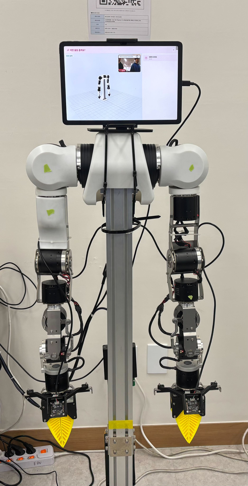

배경 — 교사 한 명이 다수의 아이를 동시에 돌보며 놀이·운반·기록까지 떠안아 과부하 상태입니다.
솔루션 — 등하원 인사·놀이·자율 운반·자동 기록을 역할 분담한 3종 로봇이 한 시스템으로 보조합니다.
출처 · 영유아보육법 시행규칙 §10 / 보건복지부 2021 전국보육실태조사 / 육아정책연구소 2023
로봇별 namespace로 모드 독립 · Robot UI는 sim/real 동일 코드베이스 공유
정문 상주 — 얼굴인식 등하원, 율동(음악·모션 동기), 무궁화꽃이 피었습니다
교사 추종(ReID+LiDAR), 자율 운반(Nav2), 숨바꼭질, 자장가
블럭쌓기(ACT 모방학습), OX 퀴즈, 가게놀이

lerobot ACT 정책으로 블럭 픽업·스택. /joint_states HOME 복귀 감지로 자동 종료.
카메라 ReID(누구를) + LiDAR(거리)로 책임 분담, 임계 거리 즉시 정지.
SLAM 맵 + nav graph named pose, 동적 장애물 회피 · 속도 스케일다운.
감정 임계 초과 자동 캡처 → 얼굴 분류 → Ollama LLM 일과 보고서 생성.
공통 기반 — 호출어·STT/TTS·의도 분류 LLM·three.js 셰이더 표정을 단일 Robot UI 코드베이스로 3대 로봇이 공유
9개 모드 전부 Gazebo 시뮬레이션 검증 → 실물 OpenArm·Vic Pinky·OMX 이전 완료. 학부모는 등·하원·사진첩·일과 보고서를 앱에서 자동 수신.